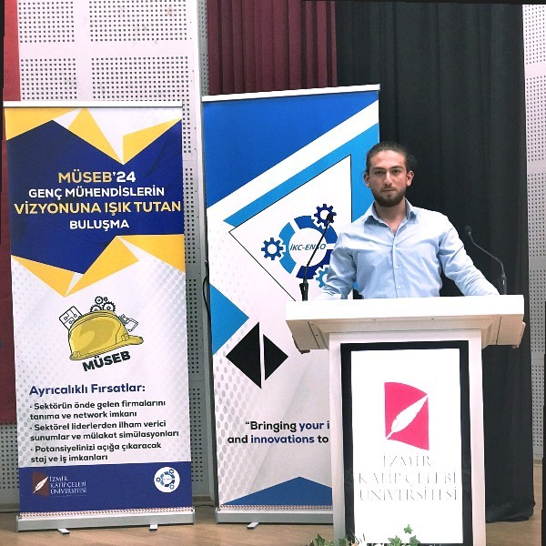
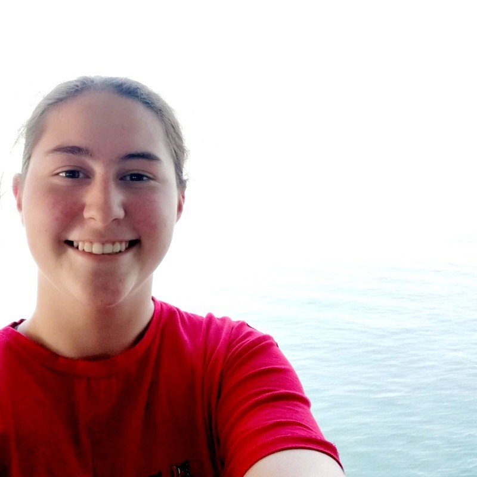
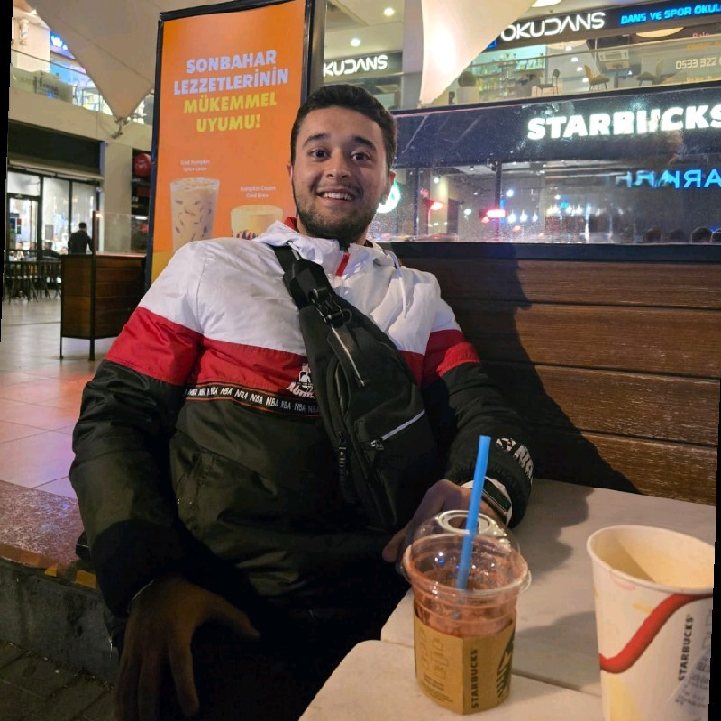

Ekibimiz

Ahmet Buğra Demir
Kurucu Mühendis
Giyilebilir piezoelektrik sistemlerin prototip tasarım ve test sürecinden sorumlu.

Melisa Uz
Elektronik Mühendisi
Sensör entegrasyonu ve devre tasarımı konularında çalışıyor; giyilebilir cihazların elektronik altyapısından sorumlu.

Muzaffer Samed Çiftci
Tasarımcı & UX
Arayüz (UI/UX) tasarımından, prototip mockup’lara ve sunum materyallerine kadar görsel kimlikten sorumlu.

Fuat Erkut Köz
Veri Analisti
Proje planlaması, müşteri koordinasyonu ve süreç raporlama işlerinden sorumlu.

Bartu Yılmaz
Yazılım Geliştirici
Web ön yüzü ve arka uç geliştirmeden sorumlu; PiezoTech’in web uygulamalarını ve dashboard’larını tasarlıyor.

Büşra Çakın
Proje Koordinatörü
Proje yönetimi, dokümantasyon ve paydaş iletişiminden sorumlu; süreç takibi ve raporlama işleriyle ilgileniyor.